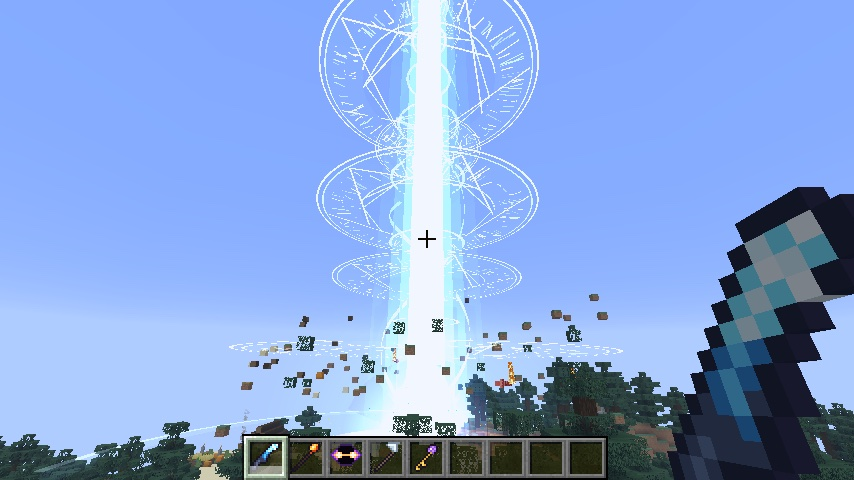
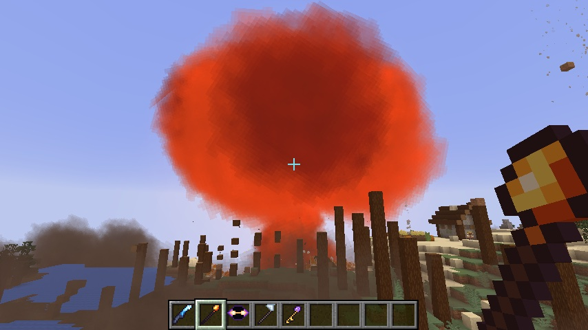
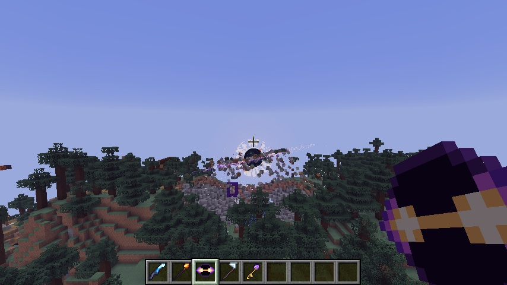
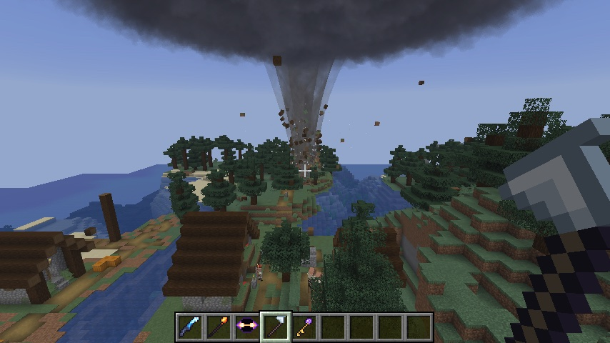

Four weapons
Right-click a spot up to 200 blocks away and watch. Your own weapons never hurt you. Block damage follows the tnt_explodes game rule, like TNT.


Annihilator
Rune circles are written into the sky above your target, one above another, while a target ring tightens on the ground. Four seconds later a beam about 20 blocks wide, counting its glow, comes down through them. It digs an 18-block-deep crater, turns sand to glass, burns the grass and throws everything nearby into the air.
Right-click a spot up to 200 blocks away. 6 second cooldown.


Nova Rod
Runes gather in the sky and the day turns red. A spark falls through the circles, everything goes white, and a ball of fire climbs into a mushroom cloud. It cools from white to orange to smoke. A ring runs out along the ground, stripping trees and knocking over walls, and the middle is left a burning crater.
Right-click a spot up to 160 blocks away. 7 second cooldown.


Singularity Core
A black hole opens over the spot, a hole full of stars ringed by a disc of light. Mobs and items get pulled in. The ground is torn up block by block, and the blocks spin round the disc. After 13 seconds it collapses and flings everything back out in a ring.
Right-click to open one. Sneak + right-click to make yours burst early.


Storm Caller
A dark cloud winds up overhead, lightning strikes, and a funnel comes down. While you hold the Storm Caller the tornado goes wherever you point. It throws mobs into the air and carries torn-up blocks round and round. Over lava it becomes a fire tornado; over water it becomes a waterspout.
Right-click to call one. Hold the staff to steer it. Sneak + right-click sends it away.
The Rift
A third realm alongside the Nether and the End: floating islands in a violet, starry sky that never gets light.


1. Build a frame
Stand up a frame of crying obsidian, like a Nether portal. The inside can be anything from 2×3 up to 21×21.
2. Tear it open
Right-click inside the frame with a Rift Key, or open a black hole next to it. Either one rips the portal open.
3. Step through
Stand in it for two seconds. If nothing's waiting on the other side, a new portal is built for you, on its own island if there's only sky.
| Crystal Wastes | Calcite and amethyst islands, with geodes inside. |
| Blossom Reach | Moss and cherry trees, with spore blossoms hanging underneath and petals in the air. |
| Ember Isles | Soul soil, magma and soul fire, with ash drifting past. |
Recipes
Everything is in the Mass Destruction creative tab. In survival, each weapon costs a nether star.
| Annihilator | Nether star, beacon, 4 diamond blocks, 3 end rods |
| Nova Rod | Nether star, 2 blaze rods, 2 TNT, 2 fire charges |
| Singularity Core | Nether star, heavy core, 3 ender eyes, 4 crying obsidian |
| Storm Caller | Nether star, breeze rod, lightning rod, 4 wind charges |
| Rift Key | Ender eye, 3 amethyst shards, 2 gold ingots, crying obsidian |
Download
Mass Destruction v1.0.0
For Minecraft 26.3 with Fabric. Needs Fabric API. For multiplayer, install it on the server and on every player's game. All downloads
FAQ
Will it lag my game?
Each weapon breaks a limited number of blocks per tick, so the big craters are dug over a few seconds instead of all at once. Flying debris is drawn by your game, not spawned as thousands of entities.
Can I use it without wrecking my base?
Turn off the tnt_explodes game rule and the weapons still hit mobs, but don't break blocks. Spawn protection and adventure mode are respected too.
What survives?
Obsidian, crying obsidian, bedrock and anything else as blast-proof. That's why the Rift portal frame is made of crying obsidian: a black hole can open it without destroying it.